u1-applications · Compare a vector path with raster pixels

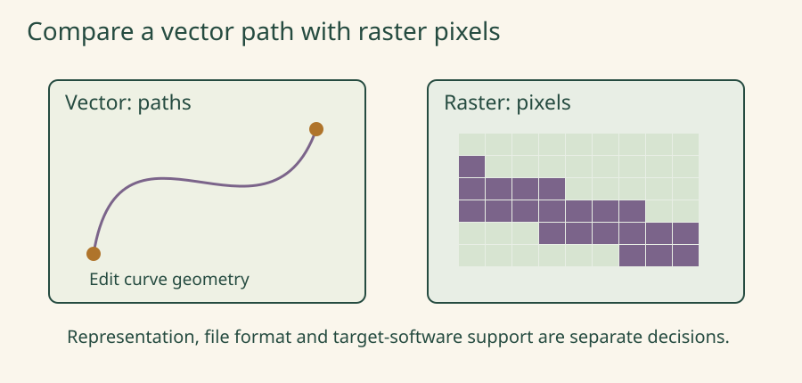
The enlarged pixel grid is a teaching model, not a claim that every raster looks blocky at normal viewing size.
24 chapter-specific process images: seven retained AI-generated WebPs and 17 original textbook SVGs. Open an image at full size, or follow its heading to the chapter. The same chapter retains its illustration in focused views and offline worksheets.

The enlarged pixel grid is a teaching model, not a claim that every raster looks blocky at normal viewing size.
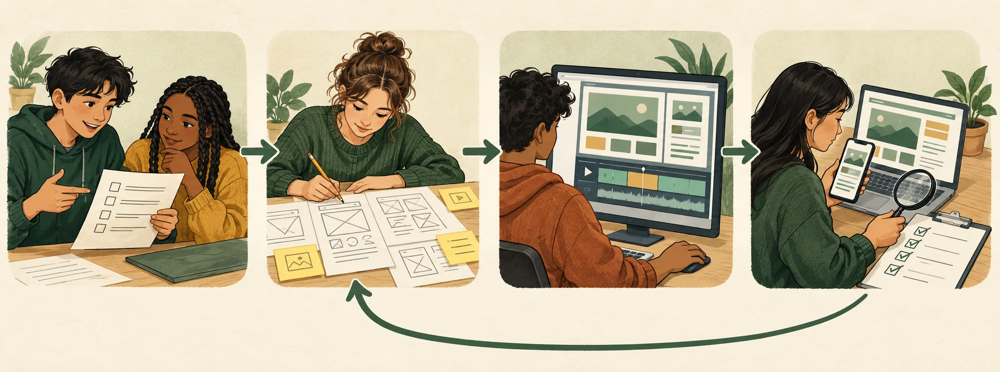
Identify the client, intended audience and the task the resource should help them complete.
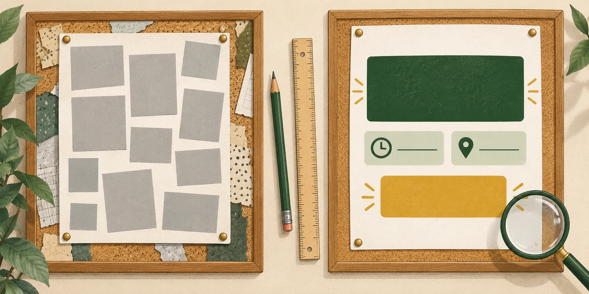
Look for changed shape, tone and space. Explain how one change could make the message easier to read.
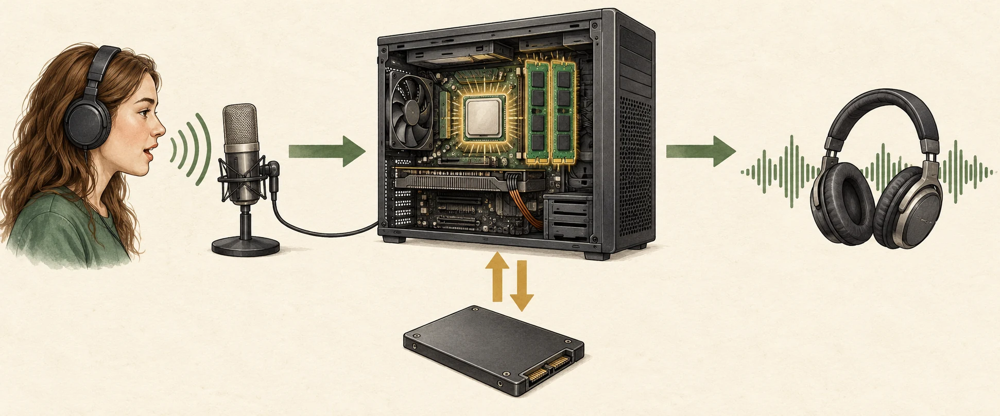
Identify input, processing, output and storage. The computer’s internal arrangement is illustrative, not a hardware assembly guide.
Public access does not automatically establish permission. Check the intended use and record the applicable terms.
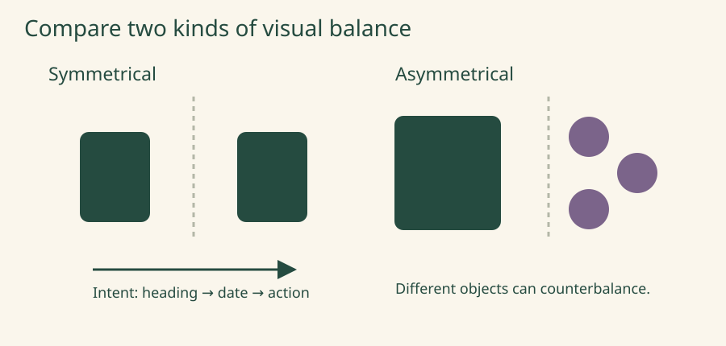
A visual analogy: balance need not be symmetry, and the arrow is an intended reading route, not measured eye movement.
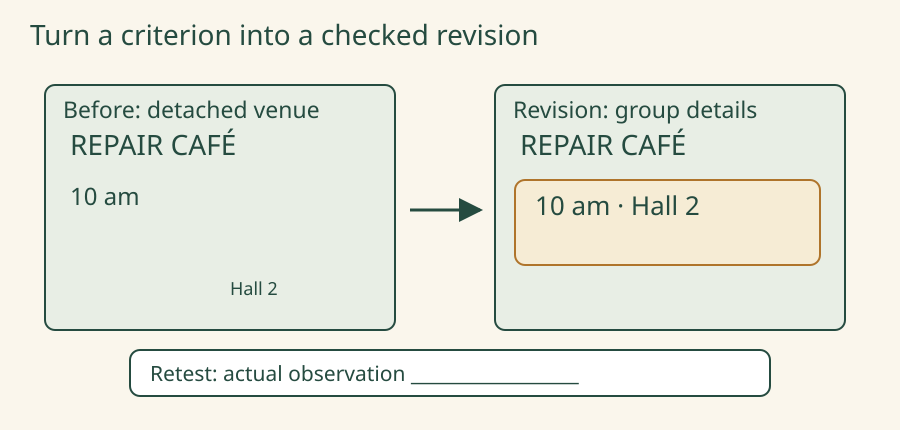
The before/after layouts are invented design alternatives. The blank retest box is not a passed user test.
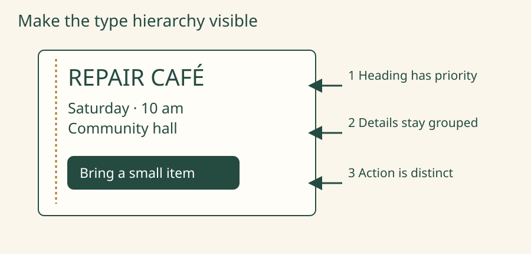
Original fictional poster model. The layout illustrates choices; it does not establish readability for every viewer.
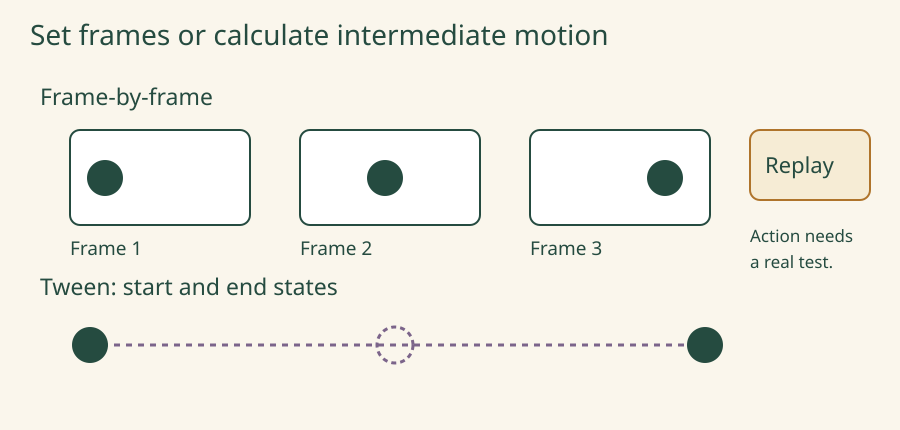
Static motion plan. The drawn Replay control does not itself operate an animation.
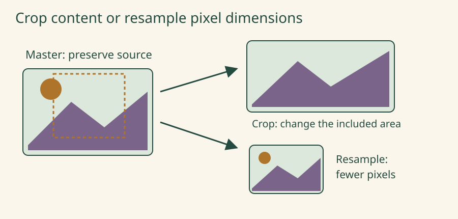
Simplified original landscape. A quarter of the pixels does not guarantee a quarter of the file bytes.
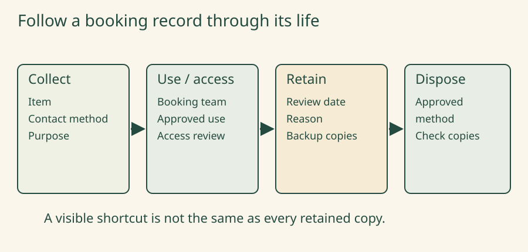
Fictional lifecycle. Applicable coverage, retention and disposal rules need an actual organisational decision.
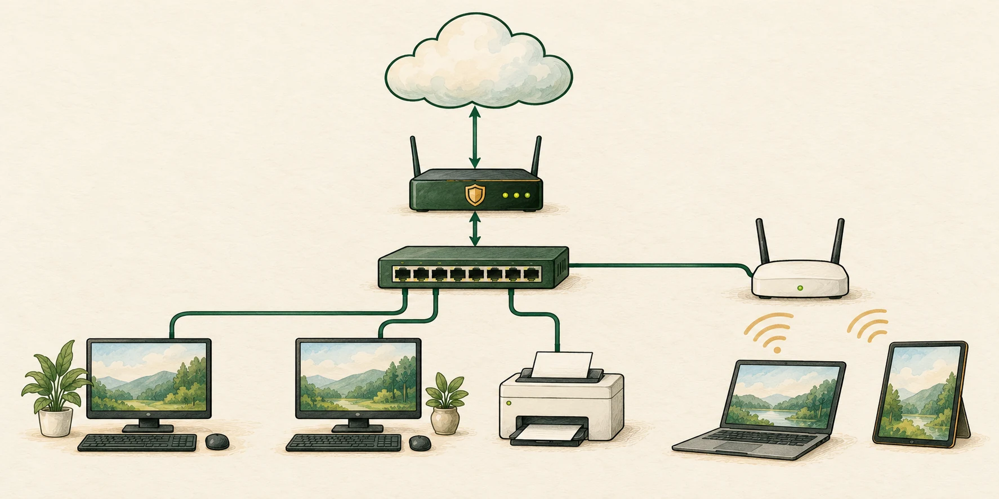
Follow a wireless device through access point, switch and router. This is one simplified topology; actual products may combine roles.
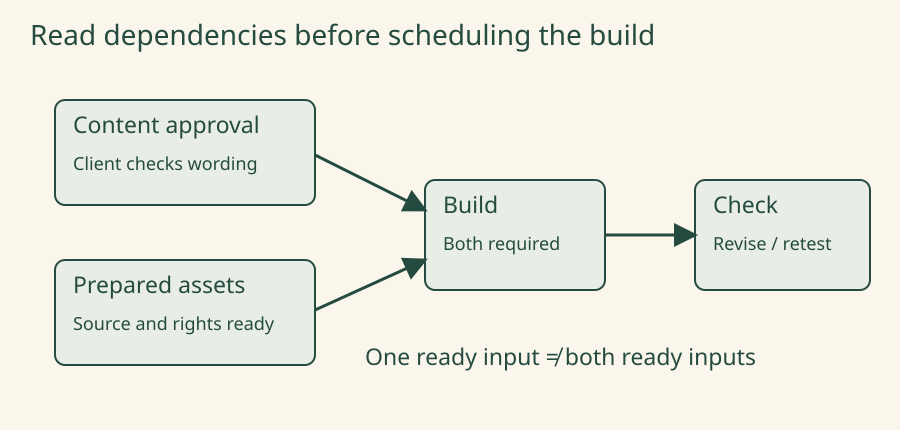
Illustrative dependency graph. Estimates and actual progress still need owners and evidence.
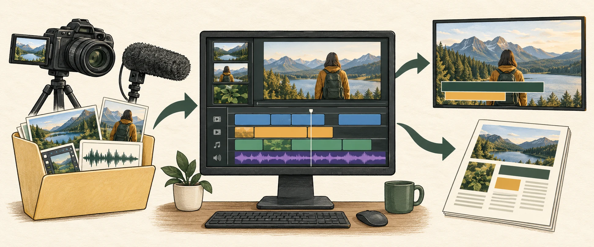
Track original media into the editable timeline, then compare a captioned video with a static printed resource.
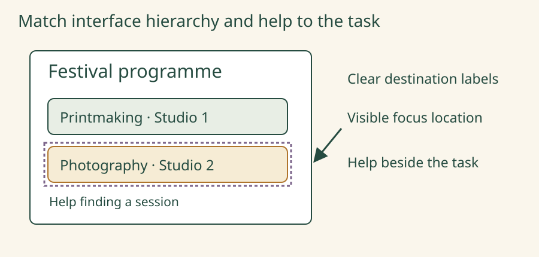
A static wireframe, not a working kiosk or evidence of accessibility conformance.
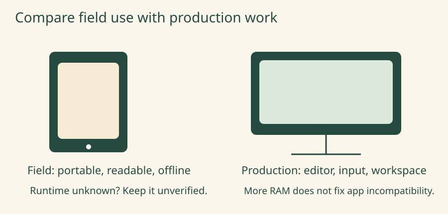
Fictional role comparison, not specifications or a recommendation for an actual product.
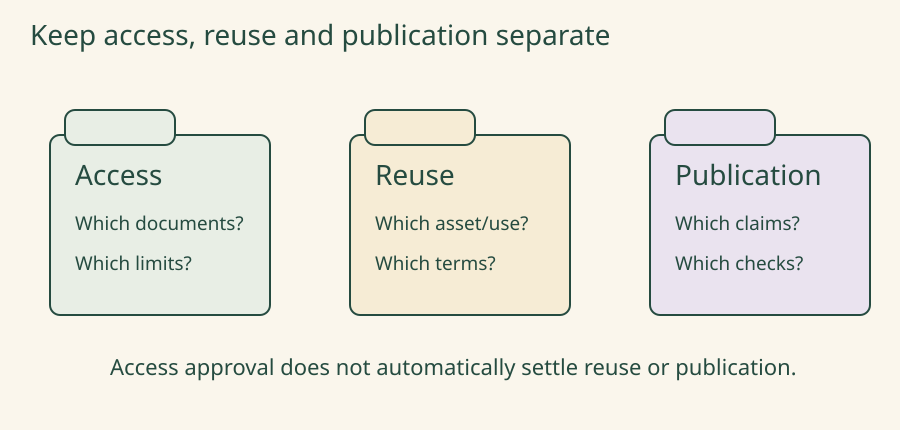
Illustrative review questions, not legal advice or a prediction of an outcome.
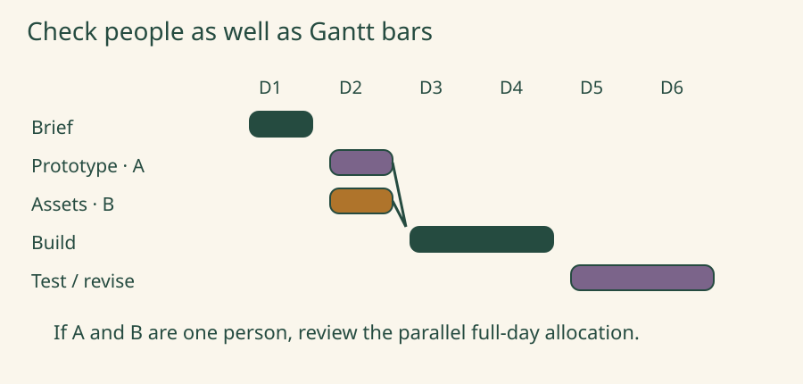
Illustrative day blocks, not actual progress or extra teaching days.
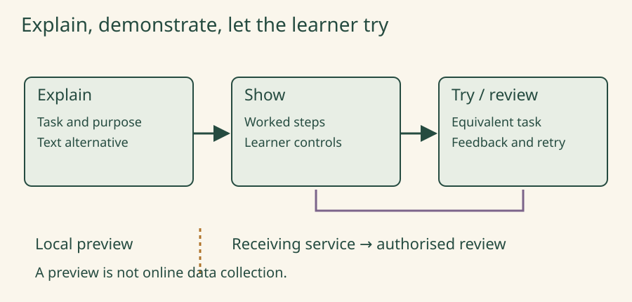
Static teaching storyboard. The response boundary is conceptual; no information is collected by this image.
The drive represents an already-existing backup. Choose the complete restore set and check the recovered booking records.
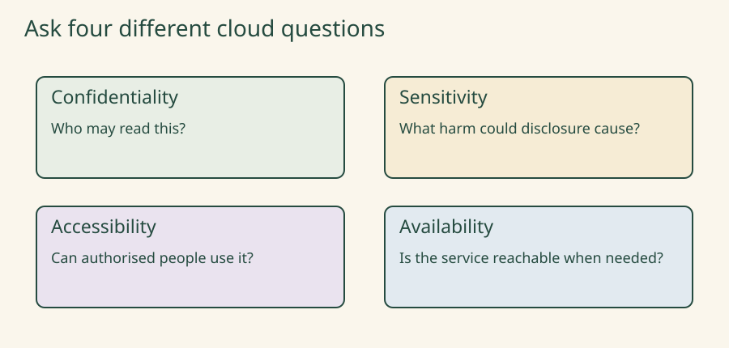
Four separate review questions; a green status for one cannot answer all the others.
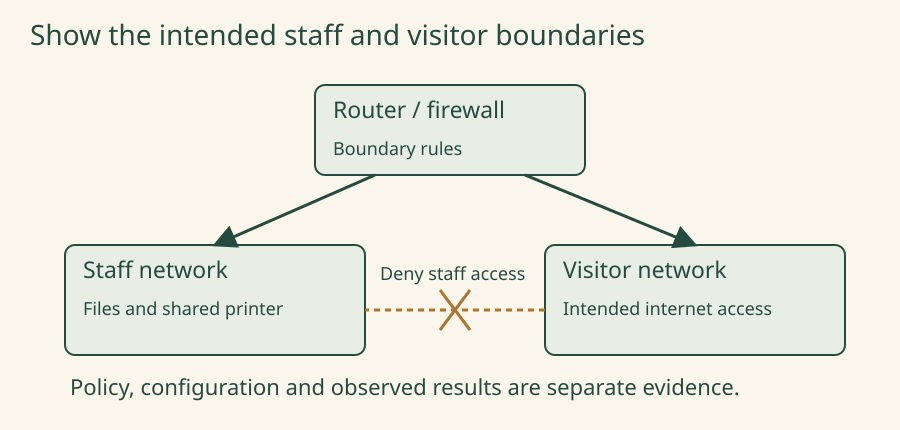
A policy proposal, not a tested configuration. Separate Wi-Fi names do not prove isolation.
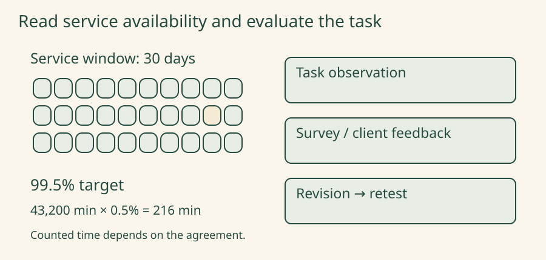
Fictional 30-day, 24-hour model with no excluded maintenance. Calendar cells are days, not outage measurements.
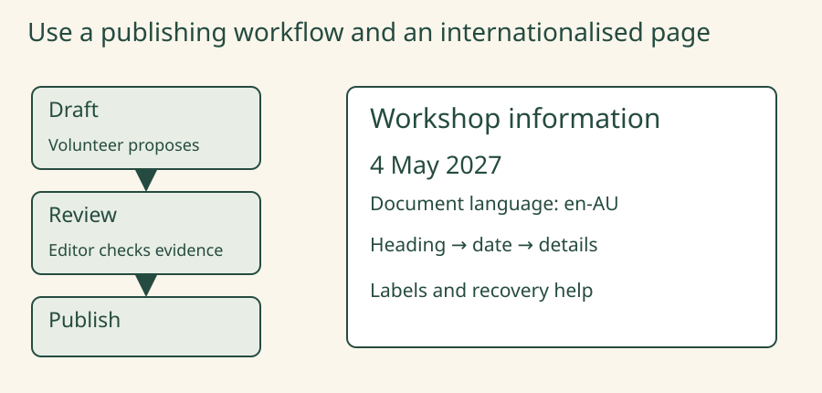
A CMS workflow and page specimen, not a functioning content-management system or complete conformance check.